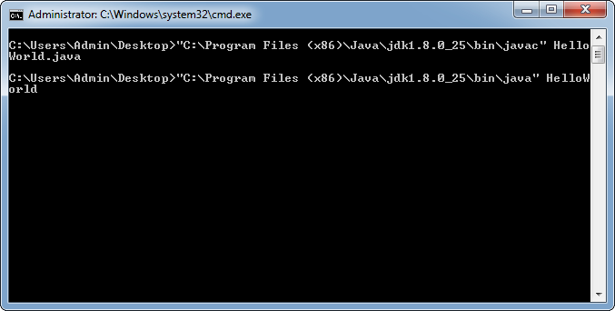

Installing the JDK and running your first program.
What you need
- Computer with windows 7
- An internet connection
- Administrative privileges
- Open web browser "Internet Explorer"
-
 Go to the url http://www.oracle.com/technetwork/java/javase/downloads/java-archive-javase8-2177648.html#jdk-8u25-oth-JPR
Go to the url http://www.oracle.com/technetwork/java/javase/downloads/java-archive-javase8-2177648.html#jdk-8u25-oth-JPR
- Click "accept license agreement" under Java SE Development Kit 8u25 section
- Click on jdk-8u25-windows-i586.exe for Windows x86
-
A download box will appear saying if you want to run or save. Click run.
 If you see this image, you do not have the required administrator privileges
If you see this image, you do not have the required administrator privileges
-
 The uac warning will appear. Click "yes" to allow the program.
The uac warning will appear. Click "yes" to allow the program.
- A setup window will appear. click the "next" button twice in the setup window. Click "next" for the destination as well
-
 Once the installer is finished, close the installer
Once the installer is finished, close the installer
-
 Open Notepad by hitting the "windows key" on your keyboard with "r" type "notepad" click "ok".
Open Notepad by hitting the "windows key" on your keyboard with "r" type "notepad" click "ok".
-
 Copy the following code:
Copy the following code:
class HelloWorld{ public static void main(String args[]) { System.out.println("Hello World!"); } } -
 Save the file to the desktop as HelloWorld.java.
When saving make sure the option for "save as type" is set to "all files"
Save the file to the desktop as HelloWorld.java.
When saving make sure the option for "save as type" is set to "all files" - Open command prompt by holding shift and right click on the Desktop. Click open command window here.
-
 Run the command
Run the command
"C:\Program Files (x86)\Java\jdk1.8.0_25\bin\javac" HelloWorld.javato compile the code -

Run the command
"C:\Program Files (x86)\Java\jdk1.8.0_25\bin\java" HelloWorldto run the code
The end result should be a single line in the terminal that says Hello World!
Say hello back!